본 포스트는 Youngwoon Lee 교수님의 Deep Reinforcement Learning 강의 자료 중 Lecture 13-1 — Sim2Real transfer (총 31장)를 바탕으로, 강의를 처음 듣는 독자도 논리적 흐름을 따라갈 수 있도록 재구성한 것입니다. 표지에는 번호가 없지만 이어지는 데크의 표지가 Sim2Real transfer #2(Lecture 13-2)이며, 그 데크는 19회차 포스트에서 다룹니다. 슬라이드 하단에 적힌 출처는 Smith et al., A Walk in the Park: Learning to Walk in 20 Minutes With Model-Free Reinforcement Learning, RSS 2023(3–4쪽) · Kumar et al., RMA: Rapid Motor Adaptation for Legged Robots, RSS 2021(11쪽) · James et al., Transferring End-to-End Visuomotor Control from Simulation to Real World for a Multi-Stage Task, CoRL 2017(12쪽) · Zhang et al., Policy Transfer across Visual and Dynamics Domain Gaps via Iterative Grounding, RSS 2021(16–29쪽)이고, 8쪽은 블로그 글(haonanyu.blog의 sim2real2), 10쪽은 NVIDIA 개발자 블로그의 Isaac Sim·Isaac Replicator 글, 13쪽은 Boston Dynamics의 유튜브 영상을 참고로 밝힙니다. 출처가 적혀 있지 않은 2쪽의 DayDreamer는 11회차 13절에서 다룬 사례입니다. 원본 슬라이드는 영문으로 작성되어 있으며, 본문의 대섹션은 슬라이드 제목을 그대로 차용했습니다. 제목이 없는 슬라이드(3–4, 13, 23–28, 30쪽)는 바로 앞 제목의 절에 넣었고, 7쪽의 “Can we use a perfect simulator?”는 9쪽과 15쪽에 그대로 다시 나와 세 처방 사이의 이정표 역할을 하므로 9쪽과 15쪽은 6절과 10절의 첫머리에서 다루었습니다. 16–22쪽처럼 장치를 하나씩 더하거나 확대해 보이는 장은 대부분 싣고, 띠를 걷어 낸 17쪽과 강조만 바꾼 24–25쪽은 글로 다루었으며, 23쪽과 26쪽은 같은 슬라이드입니다. 30쪽과 31쪽은 다음 데크의 2쪽과 51쪽에도 그대로 실려 있습니다. 10–11절의 식과 알고리즘은 강의자가 공저자로 참여한 원 논문(Zhang et al., RSS 2021)과, 그 논문이 행동 변환을 배우는 데 쓰는 GARAT(Desai et al., An Imitation from Observation Approach to Transfer Learning with Dynamics Mismatch, NeurIPS 2020)에서 가져와 그 자리에 출처를 밝혔고, 본문의 대섹션 번호는 원본 슬라이드에 없는 것을 읽기 편하도록 붙인 것입니다.
한 줄 요약 (TL;DR)
“시뮬레이션은 실세계 강화학습의 위험과 비용을 없애 주지만, 시뮬레이션과 실세계의 차이 때문에 그대로 옮기면 실패합니다. 그 차이를 메우는 세 갈래 가운데 도메인 무작위화는 물리에서는 잘 통하지만, 시각의 차이는 언제나 어느 정도의 적응을 요구합니다.”
강의는 실제 로봇이 처음부터 배우는 사례(DayDreamer, 20분 만에 걷기를 배우는 A Walk in the Park)로 시작하지만, 실세계의 상호작용은 위험하고 비싸며, 표본이 많이 들고, 보상 신호가 없고, 초기 상태가 다양하지 않다는 점에서 곧 시뮬레이션으로 넘어갑니다. 시뮬레이션에서 배운 정책은 시뮬레이션-실세계 간극 때문에 실패할 수 있고, 완벽한 시뮬레이터를 만들 수 없는 세 이유 — 정확한 물리 매개변수를 모른다, 실세계의 모든 변이를 담을 수 없다, 물리 시뮬레이션은 근사일 뿐이다 — 에 각각 시스템 식별, 도메인 무작위화, 도메인 적응이 대응합니다. 시스템 식별은 오래된 난제이고 해내도 환경의 물리는 여전히 모르며, 도메인 무작위화는 물리에서는 다리 로봇으로 통한다는 것이 보였지만 시각에서는 실세계의 다양성을 따라잡기 어렵습니다. 강의자가 공저한 IDAPT(RSS 2021)는 소스 환경에 행동 변환(GARAT)과 시각 변환(CycleGAN과 상태 복원 정규화)을 씌운 그라운딩된 환경을 만들고, 그라운딩과 정책 학습을 번갈아 반복해 시각 간극과 동역학 간극을 함께 줄이지만(원 논문의 타깃 환경은 겉모습과 동역학을 바꾼 시뮬레이터입니다), 강의의 평가는 아직 “단순한” 과제에 한정된다는 것입니다. 결론은 시뮬레이션이 안전하고 값싼 학습 수단이 될 수 있고, 도메인 무작위화가 전이의 열쇠이며, 시뮬레이션에서의 강화학습은 사족 보행에서 잘 통하지만, 열린 세계의 다양성을 시뮬레이션하는 일은 비싸고 어렵다는 것입니다.
1. 실세계의 강화학습: DayDreamer (RL in the Real World: DayDreamer)
2–4쪽은 강의를 시뮬레이터가 아닌 실제 로봇에서 강화학습을 돌린 두 사례로 엽니다. 결론부터 말하면 실세계에서 바로 배우는 것은 가능합니다. 그런데도 이번 강의가 곧 시뮬레이션으로 넘어가는 이유가 2절의 내용입니다.
1.1 처음부터 실제 로봇으로 (2쪽)
2쪽의 제목은 “RL in the real world: DayDreamer”(실세계의 강화학습: DayDreamer)이고, 영상의 한 장면만 실려 있습니다. 실내 매트 위에서 네 다리 로봇이 등을 바닥에 대고 뒤집혀 있고, 왼쪽 아래에 “0 mins”라는 자막이 붙어 있습니다. 11회차 13절에서 본 바로 그 장면입니다.
- 11회차에서 DayDreamer는 Dreamer — 세계 모형을 배우고 그 안에서 상상으로 정책을 학습하는 모형 기반 방법 — 를 실제 로봇에 적용한 사례였습니다. 실제 상호작용 하나하나가 비싸므로 세계 모형으로 학습량을 불리는 방법의 가치가 커진다는 것이 그때의 요점이었습니다.
- “0 mins”는 학습을 막 시작한 시점입니다. 로봇은 시뮬레이터가 아니라 실세계에서, 아직 일어서지도 못하는 상태로부터 배우기 시작합니다.
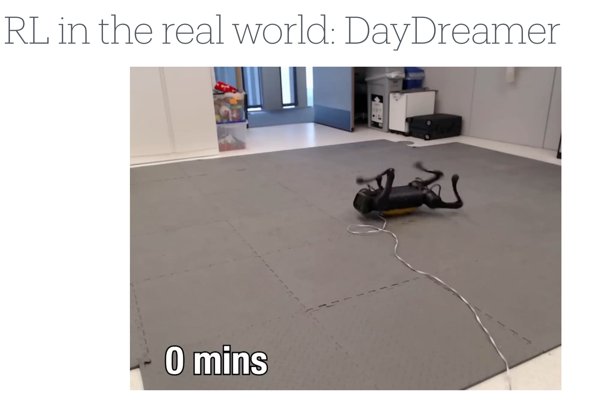
1.2 공원 산책: 20분 만에 걷기 (A Walk in the Park)
3쪽에는 제목 없이 논문의 첫 장이 실려 있습니다(출처: Smith et al., A Walk in the Park: Learning to Walk in 20 Minutes With Model-Free Reinforcement Learning, RSS 2023). 제목을 옮기면 “공원 산책: 모형 없는 강화학습으로 20분 만에 걷기를 배우다”이고, 저자는 UC Berkeley의 Berkeley AI Research 소속 Laura Smith와 Ilya Kostrikov(공동 1저자), Sergey Levine입니다.
- 제목이 두 가지를 말합니다. 하나는 20분이라는 짧은 시간, 다른 하나는 모형 없는(model-free) 강화학습입니다. 1.1절의 DayDreamer가 세계 모형으로 실제 상호작용을 아꼈다면, 이 논문은 제목대로 모형 없이도 실세계에서 짧은 시간 안에 걷기를 배울 수 있다고 말합니다.
- 그림의 지도 위에 꽂힌 네 핀에는 실내 바닥, 나무 부스러기가 깔린 흙바닥, 잔디밭, 비탈진 흙길 위를 걷는 로봇의 사진이 들어 있습니다. 실험실 밖의 서로 다른 지면입니다.
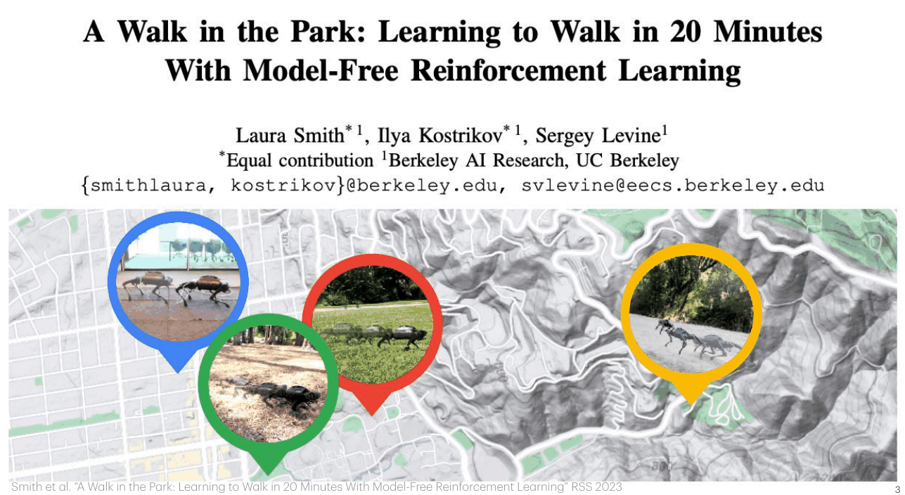
4쪽은 같은 논문의 영상 한 장면입니다. 나무 그늘이 드리운 흙길 위를 검은 사족 보행 로봇이 걷고, 뒤쪽 길에서는 사람들이 달리고 있습니다. 오른쪽 끝에는 노트북을 든 사람이 주황색 휴대용 전원 장치 옆에 앉아 있습니다. 실험실이 아니라 사람들이 오가는 산책로가 실험의 무대입니다.
두 사례는 실세계에서도 강화학습이 된다는 것을 보여 줍니다. 그렇다면 왜 굳이 시뮬레이션이 필요할까요?
2. 실세계 문제를 위한 강화학습 (RL for Real-World Problems)
5쪽은 실세계 강화학습의 어려움을 왼쪽에 빨간 글씨로, 시뮬레이션의 장점을 오른쪽에 초록 글씨로 나란히 놓고, 가운데 연한 주황 화살표로 잇습니다. 오른쪽 위의 회색 문장 Only possible in “simulation”(시뮬레이션에서만 가능하다)이 오른쪽 목록 전체에 붙는 말입니다. 1절의 사례들은 실세계 강화학습이 가능하다는 것을 보였지만, 이 슬라이드는 그것이 어렵다는 것을 말합니다.
슬라이드는 두 목록의 항목을 선으로 잇지 않지만, 다음과 같이 하나씩 짝을 이룹니다.
| 실세계의 어려움 (빨강, −) | 시뮬레이션에서는 (초록, +) | 풀어 쓰면 |
|---|---|---|
| unsafe, costly interaction (위험하고 비싼 상호작용) | safe (안전), avoid wear and tear of robots (로봇의 마모를 피함) | 학습 초기의 정책은 넘어지고 부딪힙니다. 실제 로봇은 망가지거나 주변을 다치게 하고 부품이 닳지만, 시뮬레이션에서는 넘어져도 다시 시작하면 됩니다 |
| large number of samples (많은 표본이 필요) | many many samples (아주 많은 표본) | 강화학습은 표본을 많이 요구합니다. 실세계의 표본은 실제 시간에 묶이지만, 시뮬레이터는 실제보다 빠르게, 여러 벌을 동시에 돌릴 수 있습니다 |
| lack of reward signal (보상 신호의 부재) | rich reward (풍부한 보상) | 실세계에는 게임의 점수판처럼 보상을 알려 주는 것이 없어, 보상이 무엇인지부터 정해야 합니다(13회차 4.1절). 시뮬레이터는 물체의 정확한 위치 같은 모든 상태를 알고 있어 보상을 코드 몇 줄로 계산합니다(13회차 3절) |
| limited diversity of initial states (초기 상태의 다양성 부족) | diverse initial states (다양한 초기 상태) | 실제 로봇을 매번 다른 초기 상태로 되돌리려면 사람이 손으로 물체를 놓아야 합니다. 시뮬레이터는 상태를 원하는 값으로 바로 정합니다 |
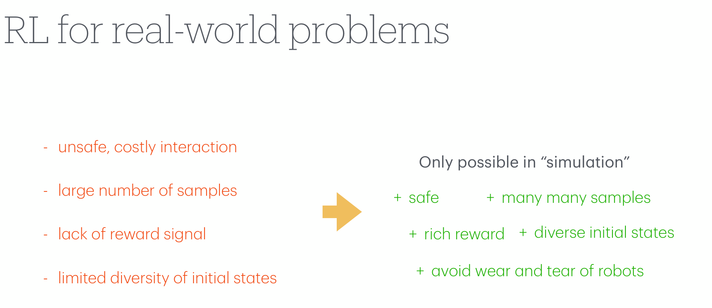
오른쪽 목록은 강화학습이 시뮬레이터 안에서 성공해 온 이유이기도 합니다. 그러나 정책이 결국 일해야 하는 곳은 실세계이므로, 시뮬레이션에서 배운 정책을 실세계로 옮기는 문제가 남습니다.
3. 시뮬레이션-실세계 전이 (Simulation-to-Real Transfer)
6쪽은 그 옮김을 그림 한 장으로 보여 줍니다. 왼쪽은 “RL training in simulation”(시뮬레이션에서 강화학습으로 학습), 오른쪽은 “Deployed in the real world”(실세계에 배포)이고, 그 사이의 화살표가 시뮬레이터에서 배운 정책을 실제 로봇에 그대로 싣는다는 뜻입니다. 이렇게 시뮬레이션에서 배운 정책을 실세계로 옮겨 쓰는 것을 시뮬레이션-실세계 전이(sim2real transfer)라 합니다. 아래 문장이 문제를 정의합니다.
Simulation-to-real transfer fails due to discrepancy between sim and real (sim2real gap) (시뮬레이션과 실세계의 차이, 곧 시뮬레이션-실세계 간극 때문에 시뮬레이션에서 실세계로의 전이는 실패한다)
- 정책은 자기가 학습한 환경에서 좋도록 최적화됩니다. 시뮬레이터가 실세계와 다르면, 시뮬레이터에서 가장 좋던 행동이 실세계에서도 좋으리라는 보장은 없습니다.
- 그 차이가 시뮬레이션-실세계 간극(sim2real gap)입니다. 간극은 두 곳에서 생깁니다. 같은 행동을 했을 때 결과가 다른 물리(마찰, 질량, 모터의 반응)의 차이와, 같은 상태가 다르게 보이는 겉모습(조명, 질감, 배경)의 차이입니다. 강의는 10절에서 이 둘을 물리 간극과 시각 간극으로 나누어 다룹니다.
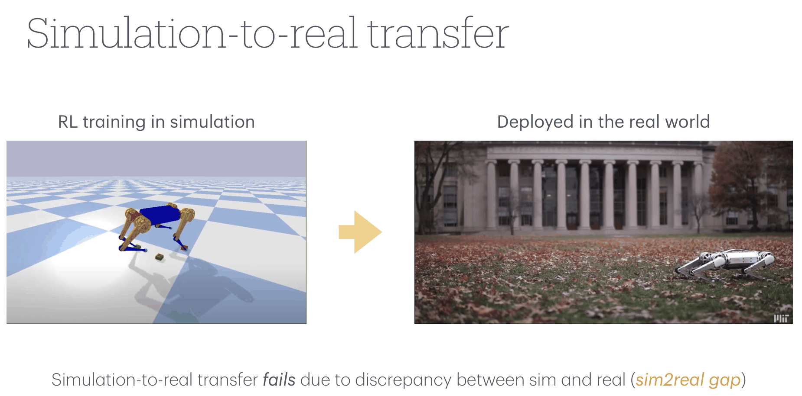
- 시뮬레이션-실세계 전이(sim2real transfer)와 시뮬레이션-실세계 간극(sim2real gap): 실세계(real world)는 앞 회차들의 번역을 따릅니다. 여기서 전이(transfer)는 학습한 것을 다른 환경으로 옮긴다는 뜻으로, 2회차 이후의 상태 전이·전이 확률(transition)과는 다른 말입니다. 환경의 전이는 이 포스트에서 동역학이라고도 부르되, 10절의 식에서는 원 논문을 따라 전이 함수·전이 확률이라고 씁니다.
- 시스템 식별(system identification), 도메인 무작위화(domain randomization), 도메인 적응(domain adaptation): 7쪽의 세 처방입니다. 도메인 무작위화는 8회차 7절의 번역을 따르고, 물리 매개변수를 흔드는 것을 물리 무작위화, 겉모습을 흔드는 것을 시각 무작위화라 부릅니다.
- 소스 환경(source environment)과 타깃 환경(target environment): 10절에서 정의합니다. “표적”은 6회차의 부트스트랩 표적(target)에 남겨 둡니다.
- 그라운딩(grounding)과 그라운딩된 환경(grounded environment): 소스 환경을 타깃 환경의 데이터에 맞춰 고치는 일입니다(10.4절). 13회차에서 “접지”를 다리가 땅에 닿는다는 뜻으로 썼으므로 섞이지 않도록 음역합니다.
- 행동 변환(action transformation), 시각 변환(visual transformation), 역방향 번역(backward translation), 상태 복원 정규화(state reconstruction regularization): 10.2–10.3절에서 다룹니다.
4. 완벽한 시뮬레이터를 쓸 수 있을까? (Can We Use a Perfect Simulator?)
간극이 문제라면, 실세계를 완벽하게 재현하는 시뮬레이터를 쓰면 되지 않을까요? 7쪽의 답은 세 가지 이유로 “그럴 수 없다”이고, 이유마다 주황 화살표로 처방이 하나씩 붙습니다.
- Exact physics parameters are unknown (e.g. friction, gain, density, deformable objects) → System identification (정확한 물리 매개변수를 모른다 — 예: 마찰, 이득, 밀도, 변형 가능한 물체 → 시스템 식별)
- Cannot provide all possible real-world variations → Domain randomization (실세계에서 일어날 수 있는 모든 변이를 제공할 수 없다 → 도메인 무작위화)
- Physics simulation is approximating real-world physics → Domain adaptation (물리 시뮬레이션은 실세계의 물리를 근사할 뿐이다 → 도메인 적응)
세 이유를 풀어 보면 다음과 같습니다.
- 첫째는 매개변수의 문제입니다. 바닥의 마찰 계수, 물체의 밀도, 모터 제어기의 이득(gain)(예컨대 목표 각도와 현재 각도의 차이에 얼마나 세게 반응하는지)은 시뮬레이터에 숫자로 넣어야 하는데, 실제 값을 정확히 아는 경우는 드뭅니다. 천이나 케이블처럼 모양이 바뀌는 변형 가능한 물체는 숫자 몇 개로 나타내기조차 어렵습니다.
- 둘째는 다양성의 문제입니다. 아래 사진의 장난감 더미처럼 실세계의 물체와 그 배치, 조명의 조합은 끝이 없어서, 시뮬레이터에 그 모두를 미리 넣어 둘 수 없습니다.
- 셋째는 모형 자체의 문제입니다. 매개변수를 정확히 알더라도 시뮬레이터가 계산하는 접촉과 마찰은 실제 물리를 근사한 것이므로 오차가 남습니다.
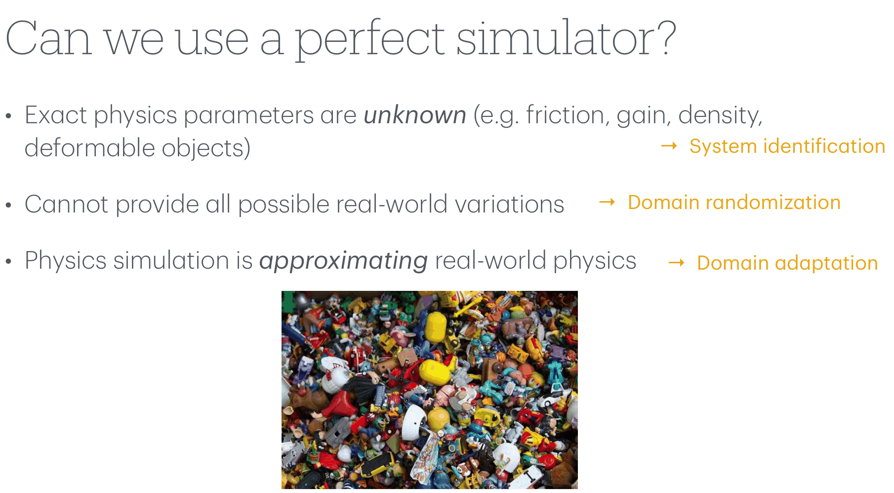
이 슬라이드는 9쪽과 15쪽에 그대로 다시 나와 강의의 지도 역할을 합니다. 세 처방과 이 포스트의 대응은 다음과 같습니다.
| 이유 | 처방 | 핵심 생각 | 슬라이드 | 이 포스트 |
|---|---|---|---|---|
| 정확한 물리 매개변수를 모른다 | 시스템 식별 | 시뮬레이터의 매개변수를 실제에 맞춘다 | 8쪽 | 5절 |
| 실세계의 모든 변이를 담을 수 없다 | 도메인 무작위화 | 변이를 넓게 흩뿌려 실세계가 그 안에 들게 한다 | 9–14쪽 | 6–9절 |
| 물리 시뮬레이션은 근사일 뿐이다 | 도메인 적응 | 소스 환경을 타깃 환경에 맞춰 고친다 | 15–30쪽 | 10–11절 |
5. 시스템 식별 (System Identification)
8쪽은 첫째 처방을 정의하고, 그것이 왜 어려운지를 두 예로 보여 줍니다.
Replicating the input-output behavior of a dynamical system (동역학계의 입출력 행동을 재현하기)
같은 입력(행동)을 넣었을 때 시뮬레이터가 실제 시스템과 같은 출력(다음 상태)을 내도록, 시뮬레이터의 매개변수를 실제 데이터에 맞추는 것입니다.
시뮬레이터의 한 스텝을 물리 매개변수 \(\boldsymbol{\xi}\)(마찰, 이득, 밀도 등)를 가진 함수 \(\mathcal{T}^S_{\boldsymbol{\xi}}(\mathbf{s}, \mathbf{a})\)로 두겠습니다. 기호 \(\mathcal{T}^S\)는 10절에서 쓸 원 논문의 표기를 미리 빌린 것입니다. 실제 로봇에서 모은 전이 \(\{(\mathbf{s}_i, \mathbf{a}_i, \mathbf{s}'_i)\}_{i=1}^{M}\)에 대해, 시스템 식별은 시뮬레이터의 예측과 실제 다음 상태의 차이를 가장 작게 만드는 매개변수를 찾습니다.
\[ \boldsymbol{\xi}^\star = \arg\min_{\boldsymbol{\xi}} \sum_{i=1}^{M} \big\lVert \mathcal{T}^S_{\boldsymbol{\xi}}(\mathbf{s}_i, \mathbf{a}_i) - \mathbf{s}'_i \big\rVert^2 \]
찾은 \(\boldsymbol{\xi}^\star\)를 넣은 시뮬레이터에서 정책을 배우면 간극이 줄어든다는 것이 이 처방의 생각입니다.
슬라이드는 곧바로 이것이 쉽지 않다고 말합니다.
Finding exact physics parameters is long-standing problem! (정확한 물리 매개변수를 찾는 것은 오래된 난제다!)
그 예로 두 가지를 듭니다.
- 로봇의 기구학(kinematics)에는 잡음이 있고 시간에 따라 변합니다. 관절의 위치와 링크의 길이 같은 기하조차 설계도와 조금씩 다르고, 마모 등으로 시간이 지나면 바뀝니다. 왼쪽 그림의 로봇에는 이름이 붙은 관절만 11개입니다.
- 카메라 보정(calibration)은 수십 년간 연구되어 왔습니다. 오른쪽 그림이 그 대상인 카메라 모형입니다.
오른쪽 그림은 표준적인 핀홀 카메라 모형입니다. 세계 좌표계의 한 점 \((X, Y, Z)\)가 이미지의 픽셀 \((u, v)\)에 맺히는 과정은 다음과 같이 쓸 수 있습니다.
\[ z_c \begin{pmatrix} u \\ v \\ 1 \end{pmatrix} = K \begin{pmatrix} R & \mathbf{t} \end{pmatrix} \begin{pmatrix} X \\ Y \\ Z \\ 1 \end{pmatrix}, \qquad K = \begin{pmatrix} f_x & 0 & c_x \\ 0 & f_y & c_y \\ 0 & 0 & 1 \end{pmatrix} \]
- 외부 매개변수(extrinsics) \(R\), \(\mathbf{t}\): 세계 좌표계에서 카메라 좌표계로 가는 회전과 평행이동, 곧 카메라가 어디에서 어느 쪽을 보는지입니다(그림의 Extrinsics 화살표).
- 내부 매개변수(intrinsics) \(K\): 초점 거리 \(f_x, f_y\)와 주점(principal point) \(c_x, c_y\)(대개 이미지 중심 근처), 곧 카메라 좌표를 픽셀로 바꾸는 방식입니다(그림의 Intrinsics K 화살표).
- \(z_c\)는 카메라에서 본 그 점의 깊이입니다.
카메라 보정은 이 매개변수들을 추정하는 일입니다. 핀홀 모형만 해도 두 행렬을 맞춰야 하고 실제 보정은 렌즈 왜곡까지 추정해야 하는데, 이 일에 수십 년의 연구가 쌓였다는 것이 슬라이드가 든 예입니다.
그림 위의 주황 문장이 이 슬라이드의 결론입니다.
challenging + still don’t know environment physics (어렵다, 게다가 환경의 물리는 여전히 모른다)
로봇과 카메라를 아무리 잘 맞추어도, 로봇이 다룰 환경 — 상자의 무게, 바닥의 마찰, 천의 뻣뻣함 — 은 과제와 물체마다 달라 일일이 식별할 수 없습니다. 하나의 정확한 값을 찾는 길이 막힌다면, 값을 하나로 정하지 않는 길을 생각하게 됩니다. 그것이 둘째 처방입니다.
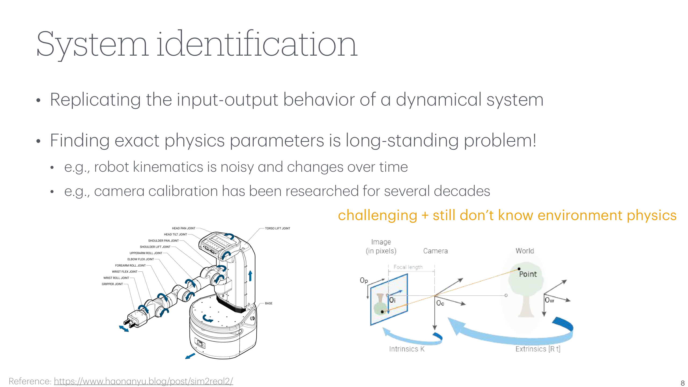
6. 도메인 무작위화 (Domain Randomization)
9쪽은 7쪽을 그대로 다시 보여 주며 둘째 줄, “실세계에서 일어날 수 있는 모든 변이를 제공할 수 없다 → 도메인 무작위화”로 넘어갑니다. 10쪽은 제목 “Domain randomization”(도메인 무작위화)과 합성 이미지 한 장뿐이며, 하단에 NVIDIA 개발자 블로그의 Isaac Sim·Isaac Replicator 글 주소가 출처로 적혀 있습니다.
생각은 5절의 정반대입니다. 시스템 식별이 실세계에 맞는 하나의 매개변수 \(\boldsymbol{\xi}^\star\)를 찾으려 했다면, 도메인 무작위화는 매개변수를 에피소드마다 넓은 분포에서 뽑아 시뮬레이터를 계속 바꿉니다. 정책은 그 모든 시뮬레이터에서 잘해야 하므로, 특정한 값에 기대지 않는 행동을 배우게 됩니다. 8회차 7절에서 본 대로, 무작위화의 폭이 충분히 넓으면 실세계도 그 분포 안의 한 표본처럼 보이게 된다는 것이 기본 발상입니다.
매개변수의 분포 \(p(\boldsymbol{\xi})\)를 정해 두고, 매개변수 \(\boldsymbol{\xi}\)인 시뮬레이터에서의 반환값을 그 분포 위에서 평균한 것을 최대화합니다.
\[ \max_{\pi}\; \mathbb{E}_{\boldsymbol{\xi} \sim p(\boldsymbol{\xi})} \Big[\, \mathbb{E}_{\tau \sim p(\tau \mid \pi, \boldsymbol{\xi})} \Big[ \sum_{t=0}^{H} \gamma^{t} r_t \Big] \Big] \]
- \(\boldsymbol{\xi}\)에는 물리 매개변수(마찰, 질량, 이득)뿐 아니라 렌더링 매개변수(질감, 색, 조명, 카메라 위치)도 들어갈 수 있습니다. 앞의 것은 시뮬레이터의 동역학 \(\mathcal{T}^S_{\boldsymbol{\xi}}\)를, 뒤의 것은 정책이 보는 이미지를 바꿉니다. 강의는 둘을 나누어 7절(물리)과 8–9절(시각)에서 다룹니다.
- 시스템 식별이 분포를 한 점 \(\boldsymbol{\xi}^\star\)로 좁히는 것이라면, 도메인 무작위화는 그 점을 모르는 대신 분포를 넓게 펼쳐 실세계의 값이 그 안 어딘가에 들기를 기대하는 것입니다.
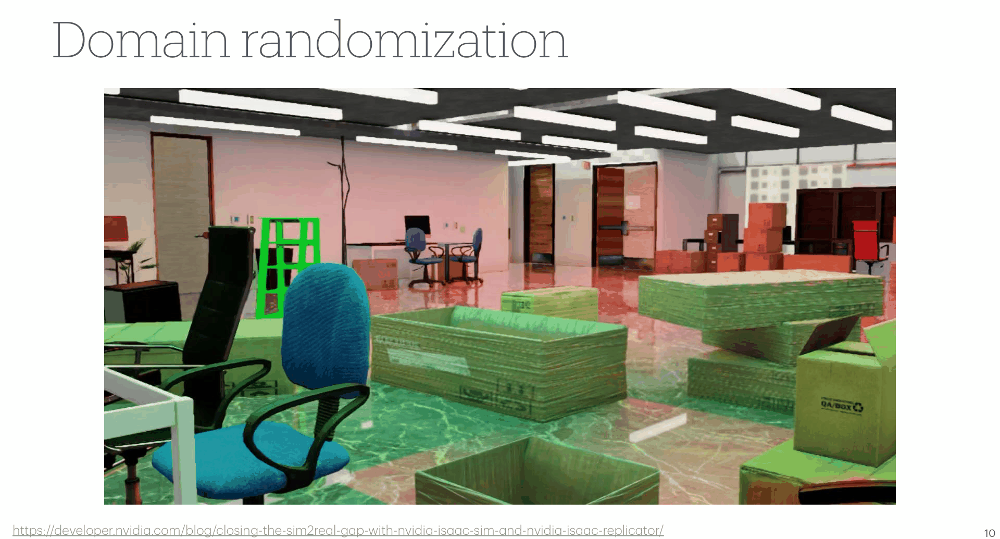
분포 \(p(\boldsymbol{\xi})\)를 넓힐수록 실세계의 값이 그 안에 들 가능성은 커지지만, 정책은 더 많은 경우를 한꺼번에 잘해야 하므로 학습이 어려워지고, 모든 경우에 무난한 보수적인 행동으로 기울기 쉽습니다. 반대로 너무 좁히면 실세계가 분포 밖으로 벗어납니다. 그래서 무엇을 얼마나 흔들지는 여전히 사람이 정해야 하는 설계 문제로 남습니다.
7. 물리 도메인 무작위화는 통한다! (Physics Domain Randomization Works!)
11쪽은 제목에서 Physics만 굵게 써서, 도메인 무작위화 가운데 물리 쪽의 결과를 먼저 보여 줍니다(출처: Kumar et al., RMA: Rapid Motor Adaptation for Legged Robots, RSS 2021). 제목의 RMA를 옮기면 “다리 로봇을 위한 빠른 운동 적응”입니다.
슬라이드는 같은 네 다리 로봇이 같은 장애물을 지나는 영상을 두 열로 나란히 놓습니다.
- 왼쪽 열 w/o physics randomization(물리 무작위화 없이)과 오른쪽 열 with physics randomization(물리 무작위화와 함께)
- 위 줄은 여러 겹 쌓은 매트로 만든 턱, 아래 줄은 나무판 위에 얹어 울퉁불퉁해진 푹신한 폼 매트리스입니다.
정지 화면만으로는 두 열의 결과가 어떻게 다른지 알 수 없지만, 제목의 느낌표가 슬라이드의 주장입니다. 시뮬레이션에서 질량, 마찰, 이득 같은 물리 매개변수를 흔들어 가며 배운 정책은 이런 실제 지면을 지나는 데 통한다는 것입니다. 31쪽의 정리에 나오는 “시뮬레이션에서의 강화학습은 사족 보행에서 잘 통한다”는 문장을 이 데크 안에서 뒷받침하는 것이 이 결과입니다. 이 슬라이드는 RMA를 물리 무작위화의 예로만 쓰며, 같은 정리 슬라이드로 끝나는 다음 데크(Lecture 13-2)가 RMA를 포함한 사족 보행 사례를 따로 다룹니다(19회차 2–5절, RMA는 4절).
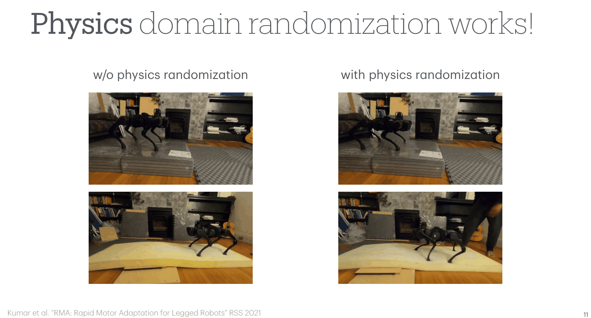
물리 무작위화가 통하는 이유는 이렇게 볼 수 있습니다. 다리 로봇처럼 강체가 중심인 과제에서는 물리 간극의 상당 부분이 마찰, 질량, 이득처럼 비교적 적은 수의 숫자로 요약되므로, 그 숫자들의 범위를 넉넉히 잡으면 실제 값이 그 안에 들도록 분포를 짤 수 있습니다. 다만 4절의 셋째 이유인 근사 오차나 변형 가능한 물체는 이 논리 밖에 있습니다. 시각에서도 그럴까요?
8. 시각 도메인 무작위화도 통할까? (Visual Domain Randomization Works?)
12쪽의 제목은 Visual만 굵게 쓰고, 11쪽의 느낌표 대신 물음표로 끝납니다(출처: James et al., Transferring End-to-End Visuomotor Control from Simulation to Real World for a Multi-Stage Task, CoRL 2017). 제목을 옮기면 “여러 단계로 된 과제를 위한 종단간 시각–운동 제어를 시뮬레이션에서 실세계로 옮기기”입니다. 종단간 시각–운동 제어(end-to-end visuomotor control)는 카메라 이미지를 받아 곧바로 모터 명령을 내는 하나의 정책을 뜻합니다. 이미지가 입력이므로, 이 정책에게는 물리 간극뿐 아니라 겉모습의 간극이 그대로 문제가 됩니다.
슬라이드의 그림은 시뮬레이션 렌더링 28장(4줄 × 7칸)을 붙인 것입니다.
- 모든 장면에 같은 검은 로봇 팔과 파란 바구니, 작은 정육면체가 있습니다. 정육면체는 대개 적갈색이지만 장면에 따라 산호색 등으로 바뀌고, 그리퍼에 쥐여 있기도 합니다.
- 그 밖의 거의 모든 것이 장면마다 다릅니다. 배경과 탁자 면의 색과 무늬(등고선 같은 물결무늬, 구름 같은 얼룩), 원기둥·원뿔·구·직육면체 같은 방해 물체의 모양과 색과 위치가 제각각입니다.
겉모습을 이렇게 극단적으로 흔들어 학습하면 실제 카메라 영상도 그 수많은 변이 가운데 하나로 보이리라는 것이 시각 무작위화의 기대입니다. 제목의 물음표는 그 기대가 정말 이루어지는지를 묻습니다.
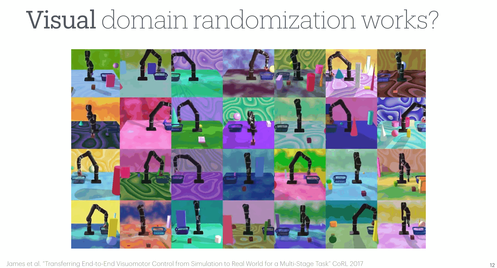
13쪽에는 제목 없이 Boston Dynamics의 영상 한 장면이 화면을 채웁니다(슬라이드에는 영상 주소만 있으며, 그 영상의 제목은 Arm you glad to see me, Atlas?입니다). 흑백으로 렌더링된 가상 장면에서 두 팔을 단 로봇이 탁자 위의 흰 물체 앞에 서 있습니다. 슬라이드는 이 장면을 글로 설명하지 않으며, 12쪽과 14쪽 사이에 놓여 시뮬레이션 렌더링의 또 다른 예를 보여 줍니다.
9. 시각 도메인 무작위화는 더 어렵다 (Visual Domain Randomization Is Harder)
14쪽이 8절의 물음표에 답합니다. 제목은 “Visual domain randomization is harder”(시각 도메인 무작위화는 더 어렵다)입니다.
- 왼쪽에는 10쪽의 무작위화된 사무실 합성 이미지가 다시 실려 있습니다.
- 오른쪽에는 실제 사진 세 장이 겹쳐 있습니다. 채소와 그릇과 냄비가 가득한 주방 조리대, 옷가지가 침대와 바닥에 흩어진 침실, 장난감 집과 기차가 바닥에 잔뜩 널린 거실입니다.
그 아래 두 문장이 결론입니다.
The real world is unmatched! (실세계는 따라잡을 수 없다!)
Real world will always require some amount of adaptation (실세계는 언제나 어느 정도의 적응을 요구할 것이다)
슬라이드는 unmatched와 some amount of adaptation을 둘레보다 조금 더 진한 글씨로 강조합니다.
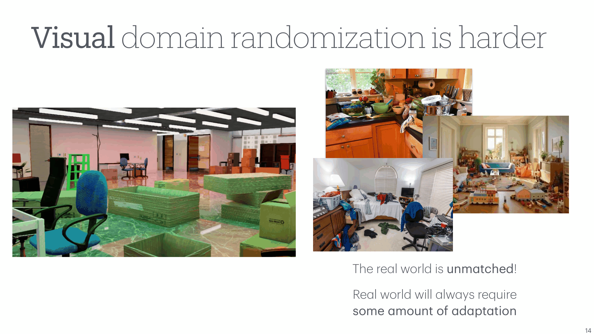
7절의 물리와 비교하면 차이가 분명해집니다.
- 물리 무작위화가 흔드는 것은 (강체가 중심인 과제라면) 숫자 몇 개입니다. 그 범위를 넉넉히 잡으면 실제 값이 안에 들 수 있습니다.
- 시각 무작위화가 흔드는 것은 시뮬레이터에 이미 넣어 둔 물체들의 색과 질감, 그리고 미리 정해 둔 방해 물체의 모양과 배치입니다. 실제 집 안의 어수선함 — 어떤 물체가 몇 개 있고, 어떻게 쌓여 있고, 옷처럼 어떤 모양으로 구겨져 있는지 — 은 그 범위 밖에 있습니다. 7쪽의 둘째 이유 “실세계의 모든 변이를 제공할 수 없다”가 시각에서 가장 날카롭게 드러나는 셈입니다.
그래서 슬라이드는 실세계가 언제나 어느 정도의 적응을 요구한다고 맺습니다. 시뮬레이터를 넓게 흔드는 것만으로 부족하다면, 실세계의 데이터를 조금 써서 시뮬레이터를 실세계 쪽으로 맞추는 셋째 처방이 필요해집니다.
10. 시각 간극과 물리 간극을 함께 다루기 (Tackle Both Visual and Physics Gaps)
15쪽은 7쪽을 세 번째로 보여 주며 셋째 줄, “물리 시뮬레이션은 근사일 뿐이다 → 도메인 적응”으로 넘어갑니다. 16–29쪽의 출처는 Zhang et al., Policy Transfer across Visual and Dynamics Domain Gaps via Iterative Grounding, RSS 2021로, 강의자가 공저자로 참여한 논문입니다(Grace Zhang, Linghan Zhong, Youngwoon Lee, Joseph J. Lim). 제목을 옮기면 “반복적 그라운딩을 통한, 시각과 동역학의 도메인 간극을 넘는 정책 전이”이고, 원 논문은 이 방법을 IDAPT라 부릅니다. 슬라이드의 제목 “Tackle both visual and physics gaps”는 visual을 보라, physics를 올리브색으로 칠합니다. 이 두 색은 16쪽의 Visual Gap·Physics Gap 띠와 27–28쪽의 Visual·Dynamics 글씨에 다시 쓰이고, 18쪽 이후의 시각 변환 상자는 연보라, 행동 변환 상자는 연노랑입니다.
10.1 소스 환경을 타깃 환경에 맞춘다 (16–17쪽)
16쪽은 문제를 두 환경의 그림으로 놓습니다.
- 소스 환경(Source Environment, 연분홍 상자): 마음껏 학습할 수 있는 환경, 곧 시뮬레이터입니다. 그림 속 이미지는 회색 바둑판 바닥 위에서 빨간 로봇 팔이 빨간 퍽을 내려다보는 시뮬레이터 화면입니다.
- 타깃 환경(Target Environment, 연두 상자): 정책을 최종적으로 배포할 환경입니다. 같은 팔과 과제가 나무 바닥의 사실적인 방에서 그려지고, 퍽은 파란색입니다.
- 두 환경은 아래에서 행동 \(a_S\), \(a_T\)를 받아 위로 이미지를 내보냅니다. 위쪽의 보라 띠 Visual Gap(시각 간극)은 두 이미지를, 아래쪽의 올리브색 띠 Physics Gap(물리 간극)은 두 행동을 감쌉니다. 같은 상태가 다르게 보이는 시각 간극은 관측 쪽의 차이이고, 같은 행동이 다른 결과를 낳는 물리 간극은 동역학의 차이인데, 슬라이드는 그 띠를 행동 쪽에 그려 행동을 고쳐서 메울 수 있음을 내비칩니다. 27–28쪽과 원 논문의 제목은 물리 간극을 동역학 간극(dynamics gap)이라고도 부르며, 이 데크에서 두 말은 같은 것을 가리킵니다.
맨 아래 주황 테두리 상자가 방법의 방향을 정합니다.
adapt “source” environment similar to “target” environment (소스 환경을 타깃 환경과 비슷하게 맞춘다)
도메인 무작위화가 소스 환경을 넓게 흔들어 타깃이 그 안에 들기를 기대했다면, 도메인 적응은 타깃 환경에서 얻은 약간의 데이터로 소스 환경을 타깃 쪽으로 고칩니다. 17쪽은 두 간극의 띠와 주황 상자를 걷어 내고 두 환경만 남긴 장으로, 18쪽부터 이 그림에 장치를 하나씩 더해 갑니다.
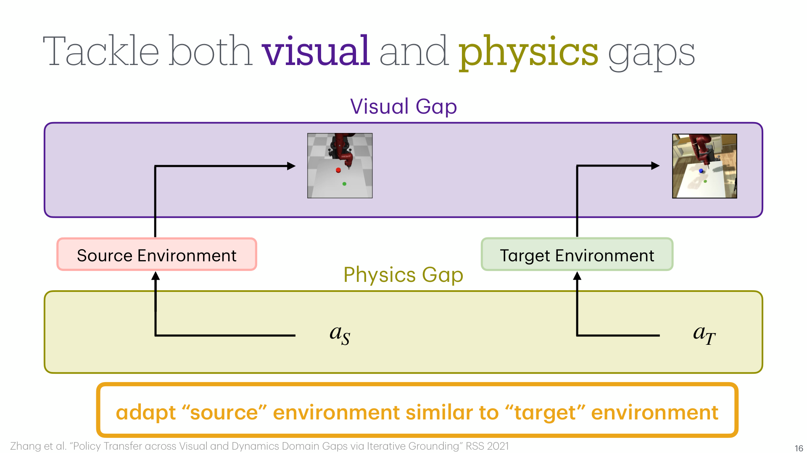
원 논문의 문제 설정(III절)을 식으로 적으면 다음과 같습니다.
- 두 환경은 상태 공간 \(\mathcal{S}\), 행동 공간 \(\mathcal{A}\), 보상 함수 \(\mathcal{R}: \mathcal{S} \times \mathcal{A} \rightarrow \mathbb{R}\)를 공유합니다. 같은 과제입니다.
- 다른 것은 두 가지입니다. 이미지 관측 공간 \(\mathcal{O}^S\)와 \(\mathcal{O}^T\)(시각 간극), 그리고 전이 함수 \(\mathcal{T}^S, \mathcal{T}^T: \mathcal{S} \times \mathcal{A} \rightarrow \mathcal{S}\)(동역학 간극)입니다.
- 소스 환경에서는 보상, 이미지, 상태를 모두 볼 수 있지만, 타깃 환경에서는 이미지 \(\mathbf{o}^T\)만 볼 수 있습니다.
목표는 타깃 환경에서의 반환값을 최대화하는, 타깃 이미지를 입력으로 받는 정책 \(\pi^\star(\mathbf{a}_t \mid \mathbf{o}^T_t)\)입니다(원 논문의 식 1).
\[ J(\pi) = \mathbb{E}_{\tau \sim p(\tau \mid \pi, \mathcal{T}^T)} \Big[ \sum_{t=0}^{H} \gamma^{t} r_t \Big] \]
이 기댓값은 타깃 환경의 전이 \(\mathcal{T}^T\) 아래에서 계산되므로 직접 최적화할 수 없습니다. 실제로 가진 것은 소스 환경과, 짝이 맞지 않는 두 이미지 묶음 — 상태 라벨이 붙은 소스 이미지 \(\mathcal{D}^S_o = \{(\mathbf{o}^S_t, \mathbf{s}^S_t), \dots\}\)와 이미지뿐인 타깃 이미지 \(\mathcal{D}^T_o = \{\mathbf{o}^T_t, \dots\}\) — 입니다. 원 논문은 이 두 묶음이 특정 과제를 위해 모은 것이 아니며, 상태 분포는 서로 비슷하다고 가정합니다.
슬라이드는 \(a_S\), \(a_T\), \(o_T\)처럼 S와 T를 아래첨자로 쓰지만, 원 논문은 도메인을 위첨자로, 시간을 아래첨자로 씁니다(\(\mathbf{a}^S_t\), \(\mathbf{o}^T_t\)). 이 포스트도 식에서는 원 논문의 표기를 따릅니다.
10.2 행동 변환 (Action Transformation) (18–19쪽)
18쪽이 첫 장치를 더합니다. 소스 환경 아래에 연노랑 상자 Action Transformation(행동 변환)이 들어서, 정책이 낸 행동 \(a_T\)가 소스 환경에 들어가기 전에 \(a_S\)로 바뀝니다. 오른쪽 타깃 쪽은 그대로 \(a_T\)를 받습니다.
- 정책은 자기가 어느 환경에 있는지 모른 채 \(a_T\)를 냅니다. 같은 \(a_T\)를 타깃 환경에 넣으면 어떤 다음 상태가 나오는데, 소스 환경에 그대로 넣으면 퍽이 가볍거나 마찰이 달라 다른 다음 상태가 나옵니다.
- 행동 변환은 \(a_T\)를 소스 환경에 넣었을 때 타깃 환경과 같은 결과가 나오도록 고친 행동 \(a_S\)로 바꿉니다. 소스 환경, 곧 시뮬레이터의 내부는 건드리지 않고 그 입구에서 물리 간극을 메우는 것입니다.
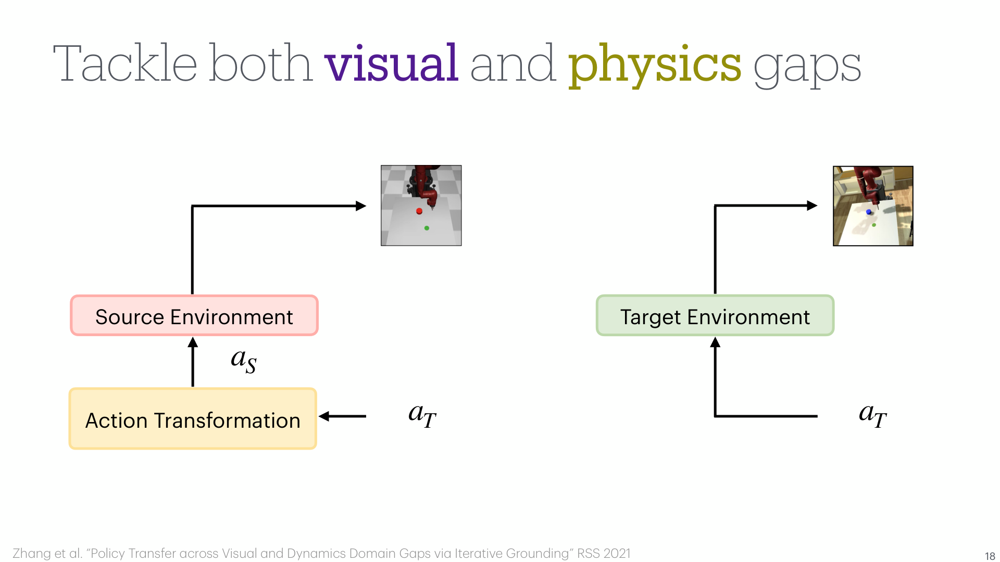
19쪽은 18쪽을 흐리게 깔고 행동 변환을 확대합니다. 입력은 타깃 이미지와 행동 \((o_T, a_T)\), 출력은 소스 환경에 넣을 행동 \(a_S\)이고, 상자 아래에서 올라오는 점선 화살표에 GARAT이 적혀 있습니다. 행동 변환을 GARAT이라는 방법으로 학습한다는 뜻입니다.
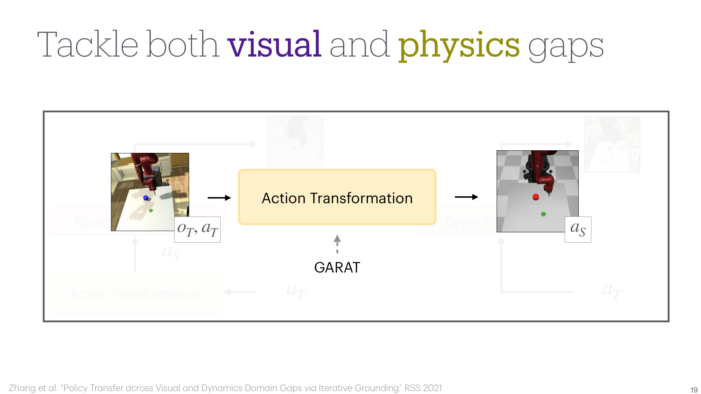
그라운딩된 전이. 에이전트가 상태 \(\mathbf{s}\)에서 행동 \(\mathbf{a}\)를 고르면, 행동 변환 정책 \(\pi_g\)가 그것을 소스 환경에 넣을 행동 \(\tilde{\mathbf{a}}\)로 바꿉니다. 그러면 소스 환경은 다음 전이를 가진 새 환경처럼 움직입니다(GARAT의 식 2).
\[ \mathcal{T}_g(\mathbf{s}' \mid \mathbf{s}, \mathbf{a}) = \sum_{\tilde{\mathbf{a}} \in \mathcal{A}} \mathcal{T}^S(\mathbf{s}' \mid \mathbf{s}, \tilde{\mathbf{a}})\, \pi_g(\tilde{\mathbf{a}} \mid \mathbf{s}, \mathbf{a}) \]
목표는 \(\mathcal{T}_g\)를 타깃 환경의 \(\mathcal{T}^T\)에 최대한 가깝게 만드는 것입니다. GARAT 논문은 전이 확률을 \(P_s\), \(P_t\), \(P_g\)로 적지만, 이 포스트에서 \(P^S\), \(P^T\)는 10.3절의 상태 예측기이므로 전이는 10.1절의 \(\mathcal{T}\)로 통일하고 \(\mathcal{T}(\mathbf{s}' \mid \mathbf{s}, \mathbf{a})\)를 전이 확률로 읽습니다.
적대적 학습. GARAT은 이 문제를 관측으로부터의 모방(imitation from observation, IfO) 문제로 보고, 13회차 10절의 GAIfO를 본뜬 적대적 목적함수로 풉니다. 타깃 환경의 전이 \((\mathbf{s}, \mathbf{a}, \mathbf{s}')\)가 “전문가 시연”이고, 그라운딩된 환경의 전이가 그것과 구별되지 않도록 만드는 \(\pi_g\)가 “학습자”입니다(GARAT의 식 6).
\[ \min_{\pi_g}\; \max_{D_\phi}\; \mathbb{E}_{\mathcal{T}_g}\big[\log D_\phi(\mathbf{s}, \mathbf{a}, \mathbf{s}')\big] + \mathbb{E}_{\mathcal{T}^T}\big[\log\big(1 - D_\phi(\mathbf{s}, \mathbf{a}, \mathbf{s}')\big)\big] \]
- 판별기 \(D_\phi\)는 그라운딩된 환경의 전이에 1, 타깃 환경의 전이에 0을 주도록 학습됩니다. \(\pi_g\)는 보상 \(-\log D_\phi(\mathbf{s}, \mathbf{a}, \mathbf{s}')\)을 받아 PPO(5회차)로 학습되므로, 판별기가 “타깃의 전이 같다”고 볼수록(\(D_\phi\)가 작을수록) 큰 보상을 받습니다.
- 13회차 8절의 분류기 \(C_\psi\)는 전문가 쪽에 1을 주었으므로 여기의 \(D_\phi\)는 \(1 - C\)에 해당하고, 보상 \(-\log D_\phi\)는 13회차의 \(-\log(1 - C_\psi)\)와 같은 꼴입니다.
- 13회차의 GAIfO가 \((\mathbf{s}, \mathbf{s}')\)를 구별했던 것과 달리 여기서는 행동 \(\mathbf{a}\)도 판별기에 들어갑니다. 같은 행동을 넣었을 때 같은 결과가 나와야 하기 때문입니다.
IDAPT는 GARAT을 쓰되, 타깃 환경에서 이미지밖에 볼 수 없다는 10.1절의 조건에 맞춥니다.
- 행동 변환은 \(F(\mathbf{a}^S \mid \mathbf{o}^T, \mathbf{a}^T)\), 곧 상태 대신 이미지와 행동을 받습니다. 상태가 필요한 자리에는 정책의 합성곱 층이 이미지에서 뽑은 특징을 대리 상태(proxy state)로 씁니다.
- 구현은 GAIfO와 PPO로 하고, 처음에는 \(F\)를 받은 행동을 그대로 돌려주는 항등 함수로 두어 아무것도 바꾸지 않은 상태에서 출발합니다.
10.3 시각 변환 (Visual Transformation) (20–21쪽)
20쪽은 둘째 장치를 더합니다. 소스 환경 위에 연보라 상자 Visual Transformation(시각 변환)이 얹혀, 소스 환경이 그린 시뮬레이터 이미지가 타깃 환경처럼 보이는 이미지로 바뀝니다. 이제 정책은 소스 환경에서 학습하면서도 타깃과 닮은 이미지를 봅니다. 행동 변환이 입구에서 물리 간극을 메웠다면, 시각 변환은 출구에서 시각 간극을 메웁니다.
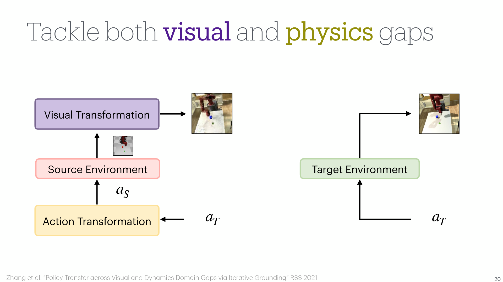
21쪽은 20쪽을 흐리게 깔고 시각 변환을 확대합니다. 원 논문은 시각 변환을 \(G: \mathcal{O}^S \rightarrow \mathcal{O}^T\)로 적습니다.
- 시각 변환(소스 → 타깃) 위에 Backward Translation(역방향 번역, 타깃 → 소스) 상자가 짝으로 놓이고, 두 상자 모두 아래의 CycleGAN에서 올라오는 점선 화살표로 학습됩니다.
- 시각 변환에는 State Reconstruction Regularization(상태 복원 정규화)에서 올라오는 점선 화살표가 하나 더 닿습니다.
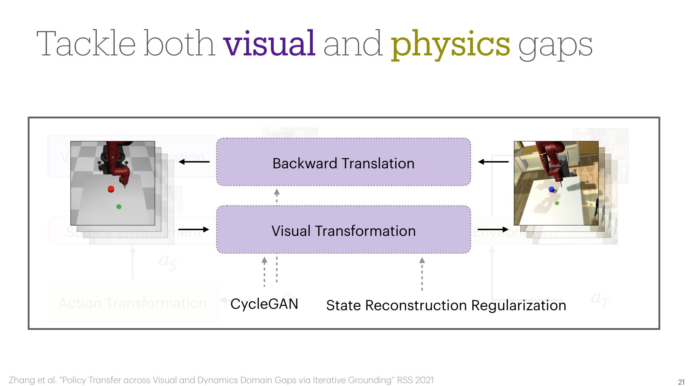
왜 CycleGAN인가. 10.1절의 두 이미지 묶음 \(\mathcal{D}^S_o\)와 \(\mathcal{D}^T_o\)에는 짝이 없습니다. 같은 상태를 두 환경에서 찍은 이미지 쌍이 있다면 지도학습으로 번역을 배우면 되겠지만, 그런 쌍은 없습니다. 원 논문의 설명대로 CycleGAN은 이런 비지도(unsupervised) 이미지-이미지 변환 방법입니다. 역방향 번역을 이 포스트에서 \(\bar{G}: \mathcal{O}^T \rightarrow \mathcal{O}^S\)로 적으면(원 논문은 이 방향에 기호를 붙이지 않습니다), 표준적인 CycleGAN은 두 가지를 함께 요구합니다.
- 적대적 손실: \(G(\mathbf{o}^S)\)는 진짜 타깃 이미지와, \(\bar{G}(\mathbf{o}^T)\)는 진짜 소스 이미지와 구별되지 않아야 합니다. 도메인마다 판별기를 하나씩 둡니다.
- 순환 일관성(cycle consistency): 갔다가 돌아오면 제자리여야 합니다.
\[ \mathcal{L}_{\text{cyc}} = \mathbb{E}_{\mathbf{o}^S}\big[\lVert \bar{G}(G(\mathbf{o}^S)) - \mathbf{o}^S \rVert_1\big] + \mathbb{E}_{\mathbf{o}^T}\big[\lVert G(\bar{G}(\mathbf{o}^T)) - \mathbf{o}^T \rVert_1\big] \]
적대적 손실만으로는 그럴듯한 타깃 이미지를 아무것이나 그려도 되지만, 순환 일관성이 붙으면 번역된 이미지에 원래 이미지를 되살릴 만큼의 정보가 남아야 합니다. 역방향 번역은 이 순환을 위해 함께 배우는 것이고, 그라운딩된 환경에서 실제로 쓰이는 것은 정방향 \(G\)입니다. 원 논문은 CycleGAN의 손실을 따로 적지 않으므로 위 식은 표준적인 형태를 옮긴 것입니다.
왜 상태 복원 정규화인가. 순환 일관성은 되돌릴 수 있다는 것만 보장할 뿐, 번역된 이미지에서 퍽이 원래 자리에 그려졌는지는 보장하지 않습니다. 그러나 정책에게 중요한 것은 이미지에 담긴 상태 — 팔과 퍽의 위치 — 입니다. 그래서 IDAPT는 번역된 이미지에서 원래 상태를 읽어 낼 수 있어야 한다는 항을 더합니다(원 논문의 식 2).
\[ \mathcal{L}_{visual} = \mathcal{L}_{CycleGAN}(\mathbf{o}^S, \mathbf{o}^T) + \lambda \big\lVert P^T(G(\mathbf{o}^S)) - \mathbf{s} \big\rVert_1 \]
- \(\mathbf{s}\)는 소스 이미지 \(\mathbf{o}^S\)가 그려질 때의 상태입니다. 소스 이미지에는 상태 라벨이 붙어 있으므로 알 수 있습니다.
- \(P^S\)는 소스 이미지에서 상태를 읽는 예측기로, 상태 라벨이 붙은 \(\mathcal{D}^S_o\)로 먼저 학습합니다.
- \(P^T\)는 타깃처럼 보이는 이미지에서 상태를 읽는 예측기입니다. \(P^S\)의 가중치로 초기화한 뒤, 번역된 이미지와 원래 상태의 쌍 \((G(\mathbf{o}^S), \mathbf{s})\)를 의사 라벨(pseudo-label)로 삼아 일부 층을 \(G\)와 함께 미세 조정합니다.
- \(\lambda\)는 두 항의 비중입니다.
번역된 이미지에서 상태를 되읽을 수 있으려면 \(G\)가 팔과 퍽을 제자리에 그려야 하므로, 이 항이 번역을 상태 쪽으로 묶어 둡니다. 원 논문의 절제 실험은 이 정규화가 번역의 잡티를 줄이고 CycleGAN의 학습을 안정시킨다고 보고합니다.
10.4 그라운딩된 환경 (Grounded Environment) (22쪽)
22쪽은 소스 쪽의 세 상자 — 시각 변환, 소스 환경, 행동 변환 — 를 연회색 둥근 상자 하나로 감싸고 Grounded Environment(그라운딩된 환경)라는 이름을 붙입니다. 바깥에서 보면 이것은 행동 \(a_T\)를 받아 타깃처럼 보이는 이미지를 내보내는 하나의 환경이고, 가운데의 기호 ≈가 말하듯 오른쪽의 타깃 환경과 근사적으로 같기를 바라는 환경입니다. 소스 환경을 타깃 환경의 데이터에 발 딛게 했다는 뜻에서 그라운딩(grounding)이라 부릅니다.
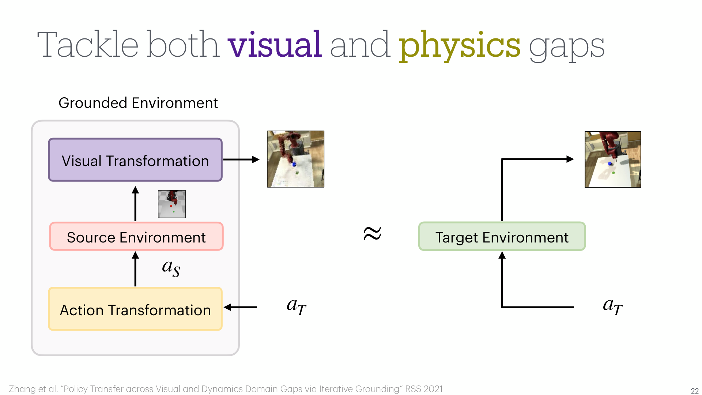
원 논문은 그라운딩된 환경의 한 스텝을 다음 순서로 정의합니다.
- 소스 이미지를 번역합니다: \(\hat{\mathbf{o}}^T_t = G(\mathbf{o}^S_t)\)
- 정책이 번역된 이미지를 보고 고른 행동 \(\mathbf{a}^T_t\)를 바꿉니다: \(\hat{\mathbf{a}}^S_t = F(\hat{\mathbf{o}}^T_t, \mathbf{a}^T_t)\)
- 소스 환경을 한 스텝 진행합니다: \(\mathbf{o}^S_{t+1} = \mathcal{T}^S(\mathbf{o}^S_t, \hat{\mathbf{a}}^S_t)\)
- 다음 이미지를 번역합니다: \(\hat{\mathbf{o}}^T_{t+1} = G(\mathbf{o}^S_{t+1})\)
3단계는 원 논문을 따라 관측에 대해 적었지만, 실제로는 소스 환경이 숨은 상태를 한 스텝 진행하고 그 상태를 렌더링한 이미지를 돌려준다는 뜻입니다. 보상은 소스 환경의 것을 그대로 씁니다(\(\hat{r}^T_t = r^S_t\)). 10.1절에서 두 환경이 보상 함수를 공유한다고 두었으므로 가능한 일입니다. 정책은 이렇게 만든 환경에서 학습한 뒤 타깃 환경에 그대로 배포됩니다.
10.5 그라운딩과 정책 학습을 번갈아 (23–26쪽)
23쪽은 전체 학습 과정을 한 장에 그립니다.
- 왼쪽 데이터 상자: Source Data(소스 이미지 묶음)와 Target Data(타깃 이미지 묶음)를 담은 상자의 오른쪽 가운데에서 나온 회색 점선 하나가 위아래로 갈라져 시각 변환과 행동 변환으로 들어갑니다. 이 데이터가 두 변환의 학습 데이터가 된다는 뜻입니다.
- 가운데: 22쪽의 그라운딩된 환경입니다.
- 오른쪽 정책(Policy, 연파랑 상자): 시각 변환의 출력을 받아 행동을 행동 변환으로 돌려보냅니다. 정책 옆의 점선 화살표 RL은 그라운딩된 환경에서 강화학습으로 정책을 배운다는 뜻이고, 정책에서 바닥을 따라 데이터 상자로 돌아가는 점선 Gather Data(데이터 수집)는 배운 정책으로 데이터를 새로 모은다는 뜻입니다.
- 맨 위: Source Environment Grounding(소스 환경 그라운딩)과 Policy Training(정책 학습)이 서로 쫓는 두 화살표 기호를 사이에 두고 놓여, 두 단계가 번갈아 반복된다는 것을 알립니다.
24쪽은 정책, RL, 데이터 수집과 제목 Policy Training을 흐리게 하고 데이터 상자와 점선, 그라운딩된 환경을 밝게 남겨 그라운딩 단계를 짚고, 25쪽은 반대로 데이터 상자와 거기서 나온 점선, 제목 Source Environment Grounding을 흐리게 하고 그라운딩된 환경과 정책·RL·데이터 수집을 밝게 남겨 정책 학습 단계를 짚습니다. 26쪽은 23쪽과 같은 슬라이드로 다시 전체를 보여 줍니다.
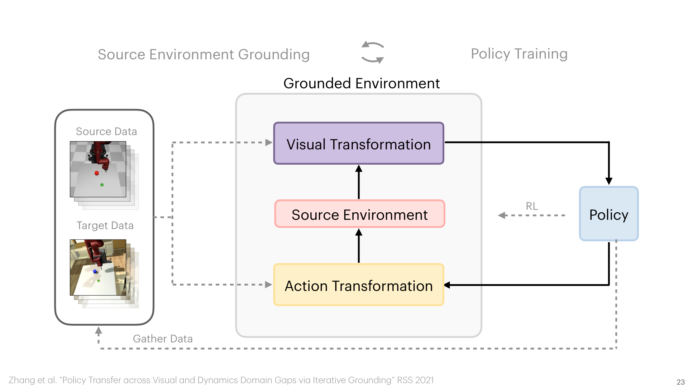
왜 한 번이 아니라 반복할까요? 처음의 두 이미지 묶음은 특정 과제를 위해 모은 것이 아니어서, 정책이 과제를 잘하게 되었을 때 찾아가는 상태 — 예컨대 퍽을 미는 장면 — 를 충분히 담고 있지 않을 수 있습니다. 변환은 데이터가 있는 곳에서만 정확하므로, 정책이 나아질 때마다 그 정책으로 타깃 환경의 데이터를 새로 모아 정책이 실제로 가는 곳에서 변환을 다시 맞춥니다. 원 논문의 절차는 다음과 같습니다.
입력: 과제와 무관하게 모은 두 이미지 묶음 \(\{\mathcal{D}^S_o, \mathcal{D}^T_o\}\), 그라운딩 단계의 수 \(N\)
- 정책 \(\pi\)와 시각 변환 \(G\)를 무작위로 초기화합니다.
- 행동 변환 \(F\)를 항등 함수로 초기화합니다.
- 소스 상태 예측기 \(P^S\)를 \(\mathcal{D}^S_o\)로 사전학습합니다.
- \(P^T\)와 함께 식 2를 최소화하도록 \(\{\mathcal{D}^S_o, \mathcal{D}^T_o\}\)로 \(G\)를 최적화합니다.
- \(i = 1, \dots, N\)에 대해 반복합니다.
- 그라운딩된 환경에서 강화학습으로 \(\pi\)를 최적화합니다. (정책 학습)
- \(\pi\)를 타깃 환경에서 실행해 \(\mathcal{D}^T_{online}\)을 모읍니다.
- \(\pi\)를 그라운딩된 환경에서 실행해 \(\mathcal{D}^S_{online}\)을 모읍니다.
- \(\{\mathcal{D}^S_{online}, \mathcal{D}^T_{online}\}\)으로 \(P^S\), \(G\), \(P^T\)를 미세 조정합니다. (시각 그라운딩)
- \(\mathcal{D}^T_{online}\)으로 GARAT을 써서 \(F\)를 최적화합니다. (행동 그라운딩)
출력: 타깃 환경에 배포할 정책 \(\pi\)
- 원 논문의 실험에서 처음의 과제 무관 이미지 묶음은 약 2만 장이고, 그라운딩 단계마다 타깃 환경에서 표본 1천 개를 새로 모으며, 그라운딩 단계의 수는 Target-Hard에서 5, Target-Easy에서 1입니다(두 난이도는 10.6절). 원 논문은 Target-Hard에서 타깃 환경과의 상호작용을 모두 합쳐 2만 5천 번으로 적습니다.
- 그라운딩된 환경에서의 정책 학습에는 SAC(7회차)의 비대칭(asymmetric) 변형을 씁니다. 비대칭 행위자–비평가는 학습에만 쓰이는 비평가에게는 시뮬레이터가 아는 상태를 주고, 배포될 행위자에게는 이미지만 주는 방식입니다.
10.6 실험 환경 (27–28쪽)
27쪽은 원 논문의 다섯 실험 환경을 세 줄로 비교합니다. 첫 줄은 Source(소스), 둘째와 셋째 줄은 Target-Easy(쉬운 타깃)와 Target-Hard(어려운 타깃)이고, 오른쪽의 세로 글씨 “Increasing Visual and Dynamics Domain Gap Size”(시각과 동역학의 도메인 간극이 커지는 방향, Visual은 보라·Dynamics는 올리브색 기울임체)와 아래로 향하는 화살표가 아래 줄로 갈수록 두 간극이 함께 커진다는 것을 나타냅니다. 슬라이드에는 환경 이름이 없으므로, 원 논문의 이름과 원 논문 Table I의 동역학 변화를 함께 정리하면 다음과 같습니다.
| 환경 (27쪽의 열) | 바뀌는 동역학 (Source / Easy / Hard) | 바뀌는 겉모습 |
|---|---|---|
| InvertedPendulum (첫째 열) | 막대 질량 4.895 / 50 / 200 | Easy: 막대 색과 배경색. Hard: 변화를 더 크게 하고, 카메라를 기울이고, 배경 질감을 바꿈 |
| HalfCheetah (둘째 열) | 관절의 armature 0.1 / 0.18 / 0.4 | Easy: 조명과 배경색, 몸 색을 조금. Hard: DeepMind Control Suite 풍의 화면, 카메라 시점, 배경 질감, 몸 색 |
| Walker2d (셋째 열) | 몸통 질량 3.534 / 5.4 / 10.0 | HalfCheetah와 같은 방식 |
| Fetch-Reach (넷째 열) | 행동 회전 0° / 30° / 45°, 행동 편향 0 / 0 / −0.5 | Easy: 색과 조명, 시점. Hard: Unity3D로 그린 사실적인 배경과 시점 변화 |
| Sawyer-Push (다섯째 열) | 퍽 질량 0.01 / 0.03 / 0.05 | Easy: 색과 조명. Hard: Unity3D로 그린 사실적인 배경과 시점 변화 |
- armature는 MuJoCo가 관절에 더하는 회전자 관성으로, 값이 클수록 같은 힘으로 관절을 돌리기 어려워집니다.
- Fetch-Reach의 행동 회전과 편향은 같은 행동 명령이 다른 방향으로, 한쪽으로 치우쳐 실행되도록 바꾼 것입니다.
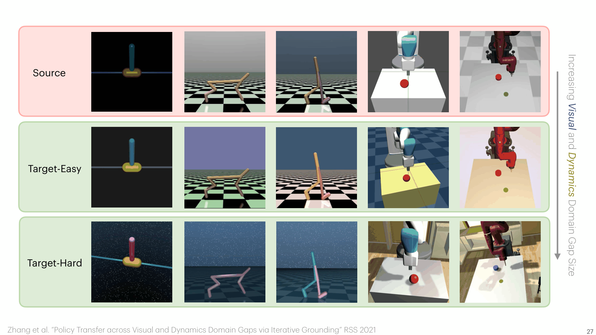
28쪽은 27쪽을 흐리게 깔고 Sawyer-Push의 소스와 Target-Hard만 꺼내 두 간극을 구체적으로 적습니다.
- Visual Gap(시각 간극): Renderer(렌더러), Viewpoint(시점), Background(배경), Object color(물체 색)
- Dynamics Gap(동역학 간극): Puck mass: 10g → 50g(퍽 질량 10g에서 50g으로)
겉모습은 그리는 방식부터 카메라 위치와 배경과 퍽의 색까지 거의 모두 다르고, 동역학에서는 퍽이 다섯 배 무거워집니다. 앞의 표에서 Sawyer-Push의 퍽 질량 0.05가 이 50g입니다.
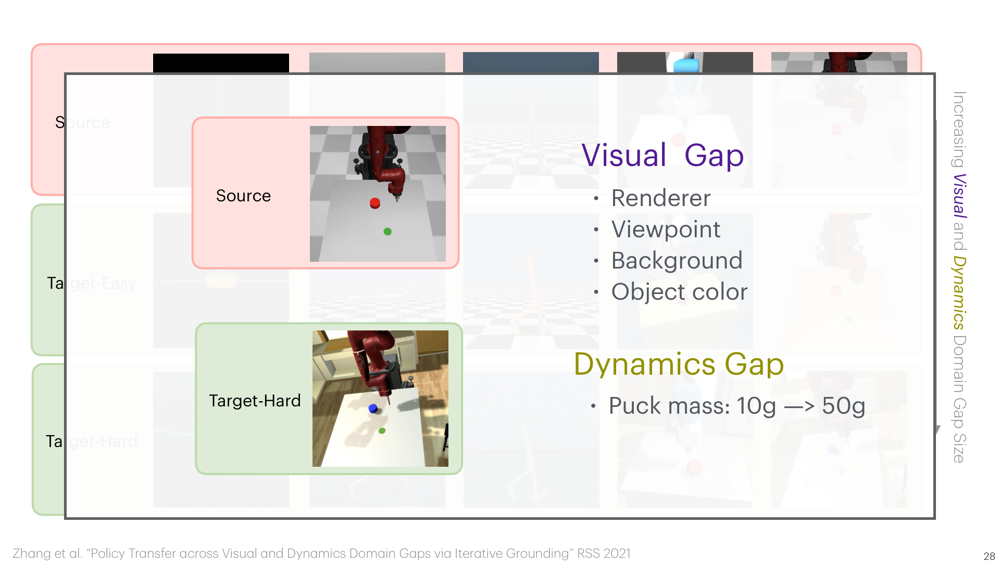
원 논문의 Target-Easy와 Target-Hard는 모두 겉모습과 동역학을 바꾼 시뮬레이터입니다. Target-Hard의 사실적인 방도 Unity3D로 그린 것이며, 원 논문은 시뮬레이션-실세계 전이와 실세계-실세계 전이를 앞으로의 과제로 남깁니다. 따라서 10–11절의 결과는 “타깃 환경이 소스 환경과 크게 다를 때도 적은 타깃 데이터로 정책을 옮길 수 있는가”에 대한 답이지, 실제 로봇에서 확인된 결과는 아닙니다. 도메인 적응이라는 셋째 처방의 생각을 통제된 환경에서 검증한 것으로 읽는 것이 정확합니다.
11. 반복 학습은 그라운딩된 환경을 개선하는가? (Does Iterative Training Improve the Grounded Environment?)
11.1 그라운딩 단계에 따른 성공률 (29쪽)
29쪽의 제목이 10.5절의 반복이 정말 쓸모 있는지를 묻습니다.
Does iterative training improve the grounded environment? (반복 학습은 그라운딩된 환경을 개선하는가?)
오른쪽 그래프가 답입니다. 가로축은 그라운딩 단계(Grounding Step, 1–5), 세로축은 성공률(Success Rate, 0.0–0.8)입니다. 그래프의 눈금에서 읽으면 성공률은 1단계 약 0.10, 2단계 약 0.15, 3단계 약 0.10에 머물다가 4단계 약 0.29, 5단계 약 0.73으로 뛰어오릅니다(눈금에서 읽은 근삿값입니다). 그래프에 환경 이름은 없지만, 왼쪽 그림이 Sawyer-Push이고, 원 논문 본문도 Sawyer-Push에서 IDAPT가 처음 세 그라운딩 단계 동안 낮은 성능을 보이다가 다섯 단계 뒤 성공률 75%에 이른다고 적어 이 곡선과 맞아떨어집니다.
원 논문은 이 환경의 처음 데이터에서 퍽이 거의 움직이지 않았다고 적습니다. 퍽이 밀리는 장면을 거의 보지 못한 변환은 정책이 퍽을 밀기 시작하는 상태에서 틀리기 쉽고, 정책이 나아져 퍽을 미는 데이터가 쌓여야 변환도 그 상태를 배웁니다. 이렇게 읽으면 처음 세 단계의 정체와 그 뒤의 상승이 함께 설명되며, 10.5절에서 그라운딩을 한 번이 아니라 반복하는 이유가 여기에 있습니다.
왼쪽 그림은 첫 그라운딩 뒤(After 1st Grounding)와 마지막 그라운딩 뒤(After Last Grounding)의 두 줄에, 소스 이미지(Source), 그것을 시각 변환으로 번역한 이미지(Translated), 타깃 이미지(Target)를 나란히 놓습니다. 두 줄 모두 번역된 이미지는 나무 바닥의 방과 흰 탁자, 파란 퍽과 초록 점을 갖추어 타깃 이미지와 닮았습니다. 두 줄의 소스 이미지는 팔과 퍽의 배치가 거의 같고 차이는 번역된 이미지에만 있는데, 아래 줄의 번역된 이미지에는 팔과 퍽 둘레에 얼룩 같은 잡티가 더 많이 남아 있습니다. 슬라이드는 두 줄의 차이를 글로 설명하지 않습니다.
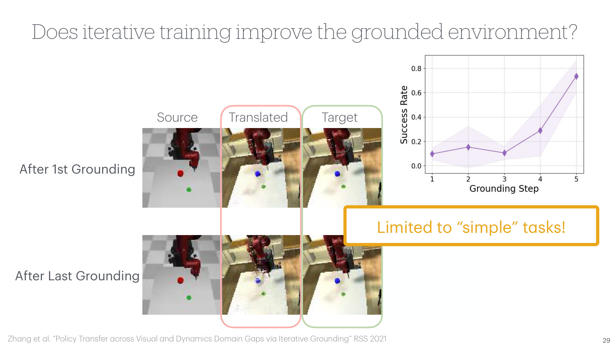
그래프 아래의 주황 상자가 이 연구에 대한 강의의 평가입니다.
Limited to “simple” tasks! (단순한 과제에 한정된다!)
다섯 환경은 막대 세우기, 시뮬레이터 속 보행, 팔 뻗기, 퍽 하나 밀기입니다. 슬라이드는 이유를 따로 적지 않지만, 10절의 장치가 모두 두 환경의 데이터로 배워야 하는 변환이라는 점을 떠올리면, 물체가 많고 접촉이 복잡한 과제일수록 배워야 할 대응이 급격히 어려워진다고 읽을 수 있습니다. 9절의 “실세계는 따라잡을 수 없다”는 문장이 도메인 적응에도 그림자를 드리우는 셈입니다.
11.2 “단순한” 과제 너머 (30쪽)
30쪽에는 제목도 출처 표기도 없이 실제 로봇 실험 장면 한 장이 실려 있습니다. 검은 탁자 위의 흰 로봇 팔과, 마커가 붙은 흰 부품들 위로 노란 말풍선 세 개 — Screwing(나사 조이기), Inserting(끼워 넣기), Flipping(뒤집기) — 가 붙어 있습니다. 29쪽이 “단순한 과제에 한정된다”고 평가한 바로 뒤에 놓여, 부품을 끼우고 돌려 조이고 뒤집는 조립 동작처럼 단순하지 않은 과제를 다음 질문으로 던지는 장면입니다. 같은 슬라이드가 다음 데크(Lecture 13-2)의 2쪽에 그대로 실려 그 데크의 이야기를 열고, 이어지는 3쪽은 Jiang et al., TRANSIC: Sim-to-Real Policy Transfer by Learning from Online Correction, CoRL 2024를 출처로 밝힙니다. 그 내용은 19회차 1절에서 다룹니다.
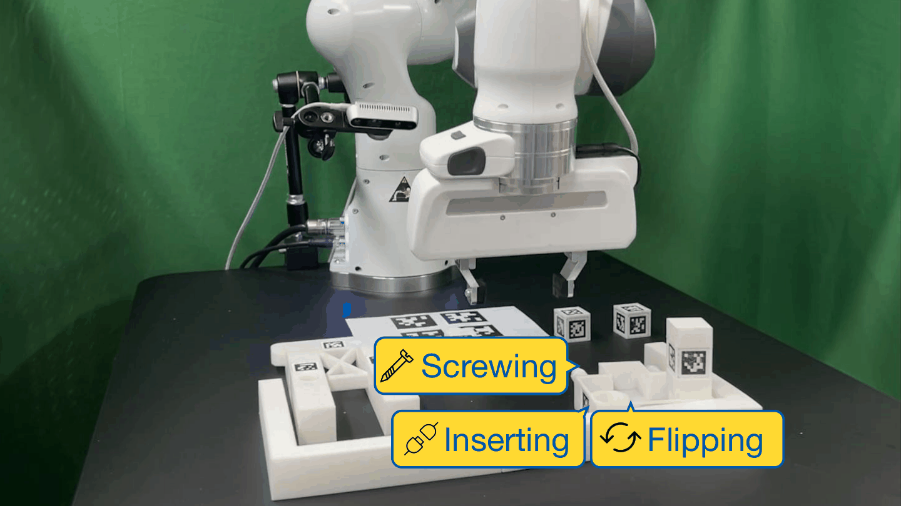
12. 정리: 시뮬레이션-실세계 전이 (Simulation-to-Real Transfer)
31쪽이 이번 강의를 다섯 줄과 하위 한 줄로 맺습니다. 제목은 6쪽과 같은 “Simulation-to-real transfer”입니다.
- 시뮬레이션은 강화학습으로 로봇 정책을 배우는 안전하고 값싼 길을 제공할 수 있습니다 (Simulation can provide a safe, cheap way to learn a robot policy using RL).
- 시뮬레이션-실세계 전이는 시뮬레이션-실세계 간극 때문에 실패할 수 있습니다 (Sim2real can fail due to sim2real gap).
- 도메인 무작위화가 시뮬레이션-실세계 전이의 열쇠입니다 (Domain randomization is key to sim2real transfer).
- 시뮬레이션에서의 강화학습은 사족 보행에서 잘 통합니다 (RL in simulation works well in quadruped locomotion).
- 휴머노이드 보행을 위한 강화학습은 다음 강의에서! (RL for humanoid locomotion in the next lecture!)
- 하지만 열린 세계의 다양성을 시뮬레이션하는 일은 비싸고 어렵습니다 (Yet, simulating open-world diversity is expensive and challenging).
다섯 줄은 이번 강의의 내용에 다음과 같이 대응합니다.
- 첫째 줄은 2절의 표, 곧 실세계의 네 어려움이 시뮬레이션에서는 장점으로 뒤집힌다는 것입니다.
- 둘째 줄은 3절의 문제 정의입니다.
- 셋째 줄은 6–9절의 요약입니다. 세 처방 가운데 강의가 열쇠로 꼽은 것은 시스템 식별(5절)도 도메인 적응(10–11절)도 아닌 도메인 무작위화입니다.
- 넷째 줄을 이 데크 안에서 뒷받침하는 것은 7절의 물리 무작위화 결과뿐입니다. 같은 정리 슬라이드로 끝나는 다음 데크(Lecture 13-2)는 사족 보행의 시뮬레이션-실세계 전이를 따로 다룹니다(19회차 2–5절). 하위 줄은 휴머노이드 보행을 다음 강의로 예고하는데, 이 슬라이드가 13-2의 마지막 쪽에도 그대로 실려 있으므로 그 예고가 가리키는 강의는 13-2 다음으로 보입니다.
- 다섯째 줄은 9절의 “실세계는 따라잡을 수 없다”와 11절의 “단순한 과제에 한정된다”를 함께 이어받습니다. 무작위화로 흔들 수 있는 것도, 적응으로 맞출 수 있는 것도 시뮬레이터에 담긴 세계까지이고, 열린 세계의 다양성 자체를 시뮬레이터에 담는 일은 여전히 비싸고 어렵다는 것입니다.
세 처방을 한 장으로 다시 비교하면 다음과 같습니다.
| 처방 | 무엇을 바꾸는가 | 필요한 것 | 이번 강의의 평가 | 절 |
|---|---|---|---|---|
| 시스템 식별 | 시뮬레이터의 매개변수를 실제 값 \(\boldsymbol{\xi}^\star\)로 맞춤 | 실제 시스템의 입출력 데이터 | 오래된 난제이고, 해내도 환경의 물리는 여전히 모름 | 5절 |
| 도메인 무작위화 | 매개변수를 분포 \(p(\boldsymbol{\xi})\)에서 뽑아 시뮬레이터를 계속 바꿈 | 무엇을 얼마나 흔들지에 대한 설계 | 물리에서는 통함(사족 보행), 시각에서는 더 어려움. 전이의 열쇠 | 6–9절 |
| 도메인 적응 (IDAPT) | 소스 환경의 입구와 출구에 행동 변환과 시각 변환을 씌워 타깃 환경에 맞춤 | 과제와 무관한 두 도메인의 이미지(원 논문 실험에서 약 2만 장)와 그라운딩 단계마다 타깃 표본 1천 개 | 시각과 동역학의 간극을 함께 줄이지만(실험의 타깃도 시뮬레이터), 단순한 과제에 한정됨 | 10–11절 |
정리하며 (Closing Remarks)
이번 강의의 논리 사슬을 한 장으로 요약하면 다음과 같습니다.
| 단계 | 내용 | 근거 |
|---|---|---|
| ① 출발점 | 실제 로봇도 처음부터 강화학습으로 배울 수 있습니다(DayDreamer, 모형 없는 강화학습으로 20분 만에 걷기) | 1절 |
| ② 실세계의 어려움 | 실세계 강화학습은 위험하고 비싸며, 표본이 많이 들고, 보상 신호가 없고, 초기 상태가 다양하지 않습니다. 시뮬레이션에서는 이 모두가 장점으로 뒤집힙니다 | 2절 |
| ③ 간극 | 시뮬레이션에서 배운 정책은 시뮬레이션-실세계 간극 때문에 실세계에서 실패할 수 있습니다 | 3절 |
| ④ 세 이유와 세 처방 | 매개변수를 모른다 → 시스템 식별, 모든 변이를 담을 수 없다 → 도메인 무작위화, 물리는 근사일 뿐이다 → 도메인 적응 | 4절 |
| ⑤ 시스템 식별 | 입출력 행동을 재현하도록 매개변수 \(\boldsymbol{\xi}^\star\)를 맞추지만, 로봇 기구학과 카메라 보정조차 오래된 난제이고 환경의 물리는 여전히 모릅니다 | 5절 |
| ⑥ 도메인 무작위화 | 매개변수를 분포 \(p(\boldsymbol{\xi})\)에서 뽑아 실세계도 그 안의 한 표본처럼 보이기를 기대하며, 물리 무작위화는 다리 로봇에서 통합니다(RMA) | 6–7절 |
| ⑦ 시각의 한계 | 질감과 색과 방해 물체를 흔들어도(James et al.) 실세계의 시각적 다양성은 따라잡을 수 없어, 언제나 어느 정도의 적응이 필요합니다 | 8–9절 |
| ⑧ 소스를 타깃에 맞추기 | 시각 간극(관측)과 물리 간극(행동)을 함께 다루도록, 타깃 데이터 약간으로 소스 환경을 타깃 쪽으로 고칩니다 | 10.1절 |
| ⑨ 행동 변환 | \(F(\mathbf{a}^S \mid \mathbf{o}^T, \mathbf{a}^T)\)를 GARAT으로, 곧 이미지에서 뽑은 대리 상태로 만든 (상태, 행동, 다음 상태) 전이를 가르는 판별기를 속이도록 배워 동역학 간극을 메웁니다 | 10.2절 |
| ⑩ 시각 변환 | \(G: \mathcal{O}^S \rightarrow \mathcal{O}^T\)를 CycleGAN으로 배우고, 번역된 이미지에서 상태를 되읽게 하는 정규화로 상태를 간직하게 합니다 | 10.3절 |
| ⑪ 반복적 그라운딩 | 두 변환을 씌운 그라운딩된 환경에서 정책을 배우고, 그 정책으로 타깃 데이터를 모아 변환을 다시 맞추기를 반복합니다 | 10.4–10.5절 |
| ⑫ 결과와 한계 | 실험의 타깃은 겉모습과 동역학을 바꾼 시뮬레이터이고, Sawyer-Push의 성공률은 그라운딩 단계에 따라 약 0.1에서 약 0.73으로 오르지만, 강의의 평가는 단순한 과제에 한정된다는 것입니다 | 10.6, 11절 |
| ⑬ 결론 | 시뮬레이션은 안전하고 값싼 학습 수단이 될 수 있고, 도메인 무작위화가 전이의 열쇠이며, 시뮬레이션에서의 강화학습은 사족 보행에서 잘 통합니다. 그러나 열린 세계의 다양성을 시뮬레이션하는 일은 비싸고 어렵습니다 | 12절 |